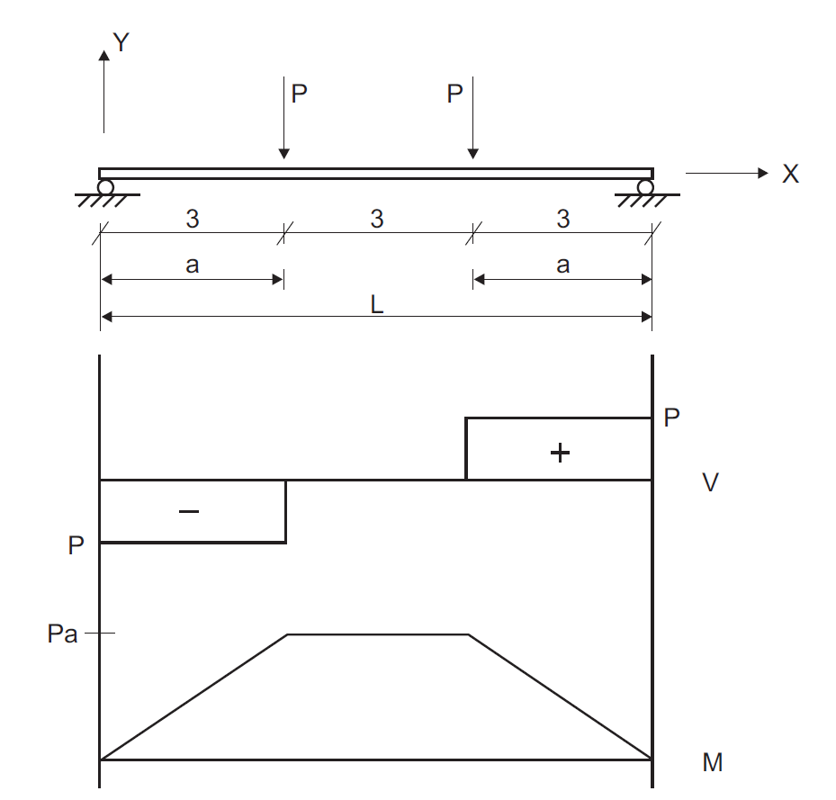
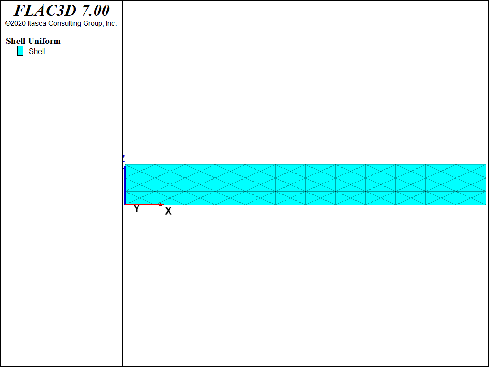
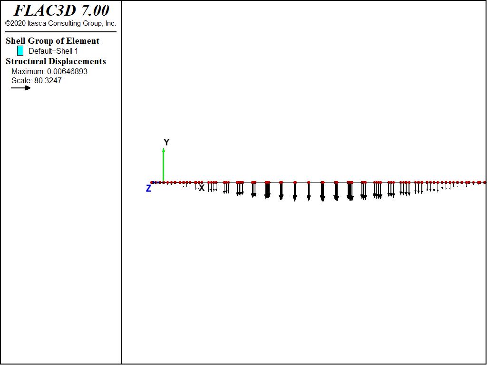
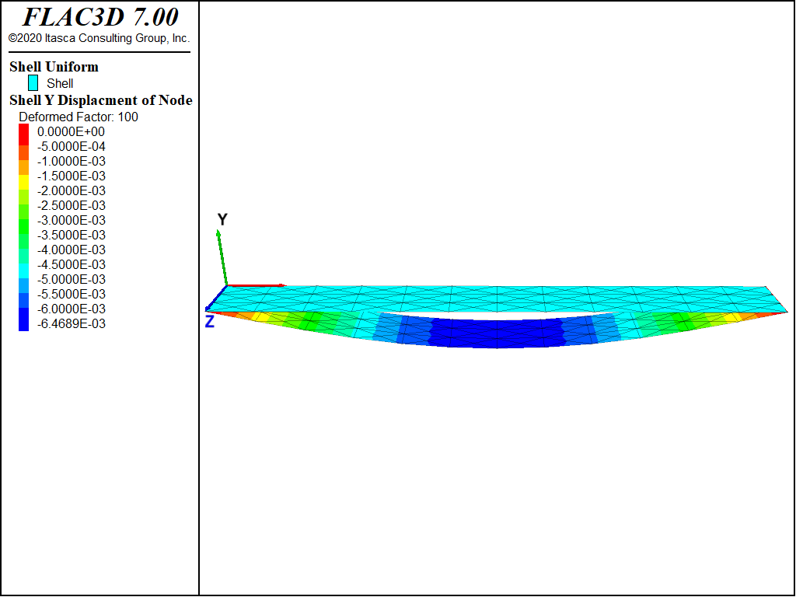
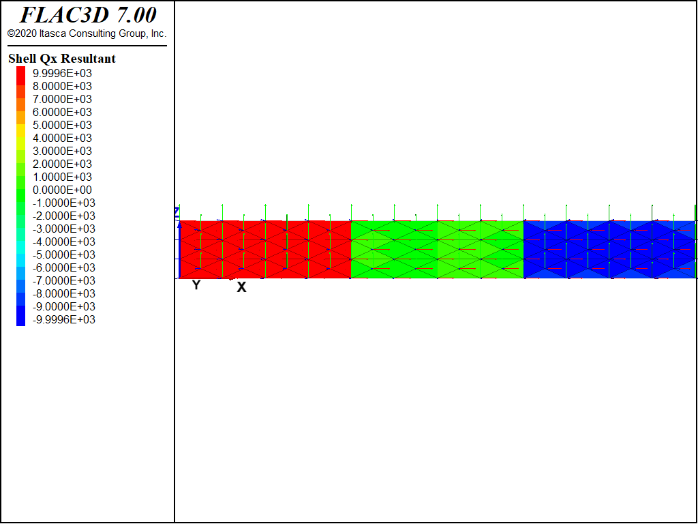
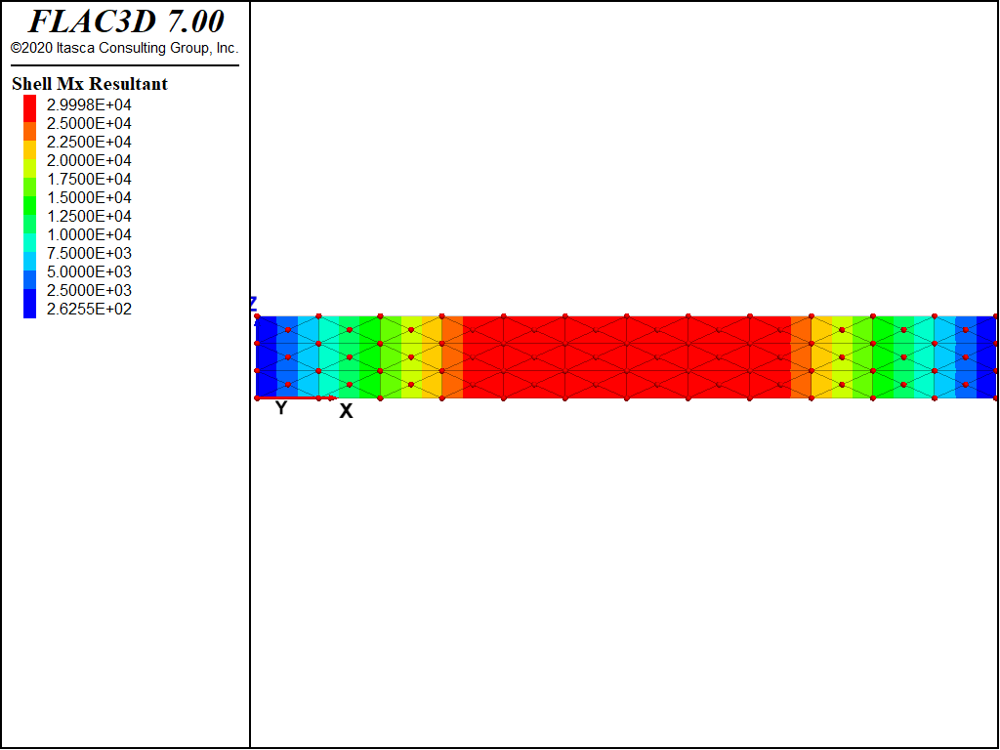
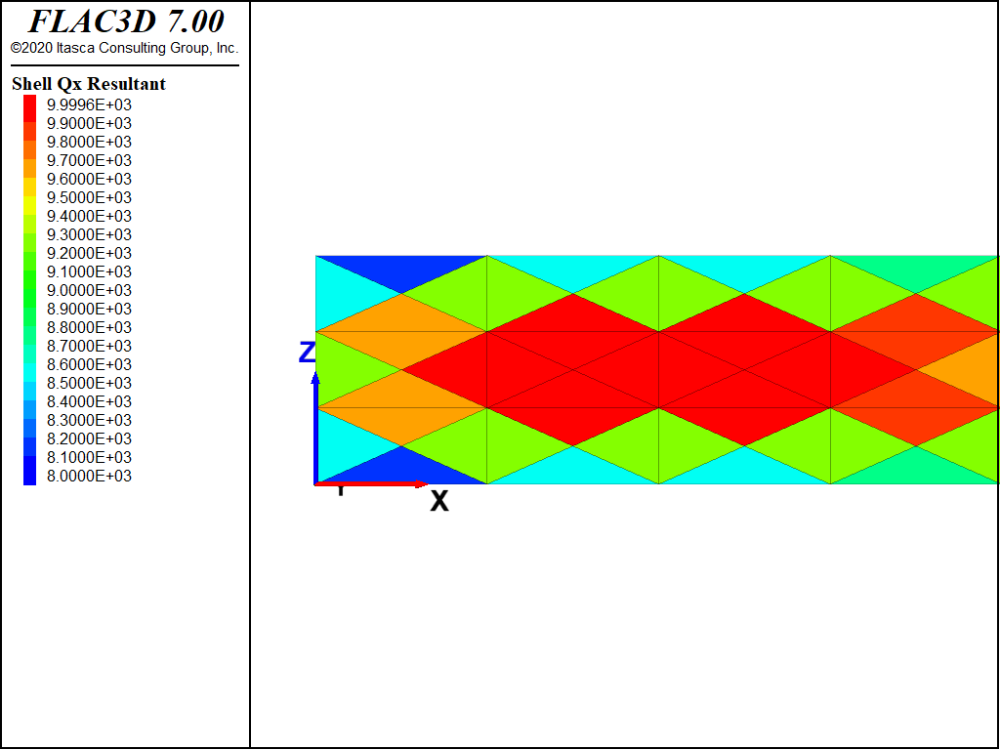
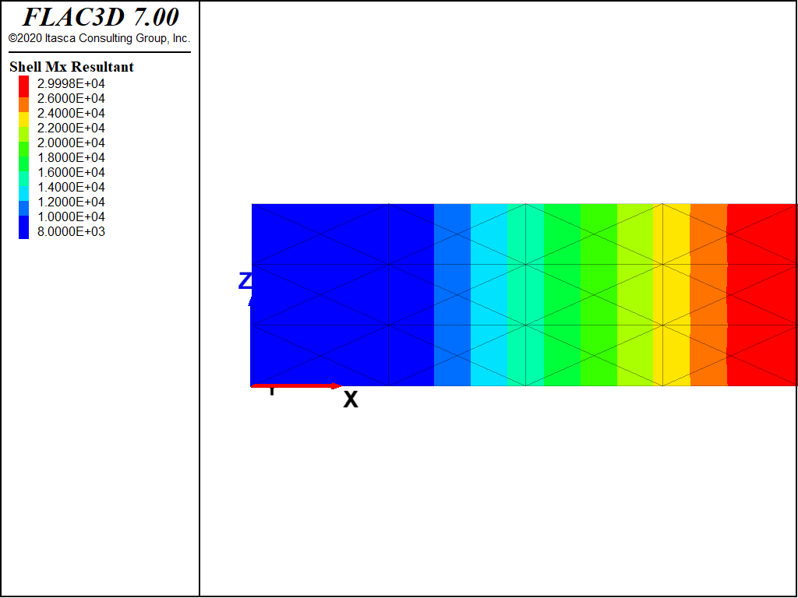
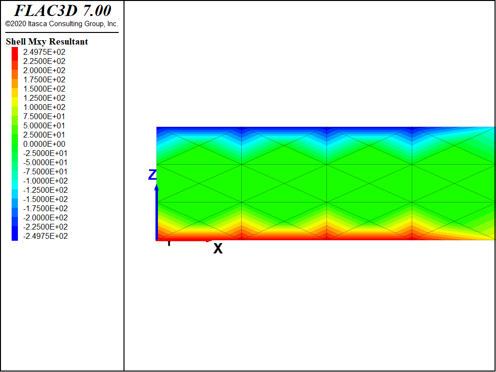
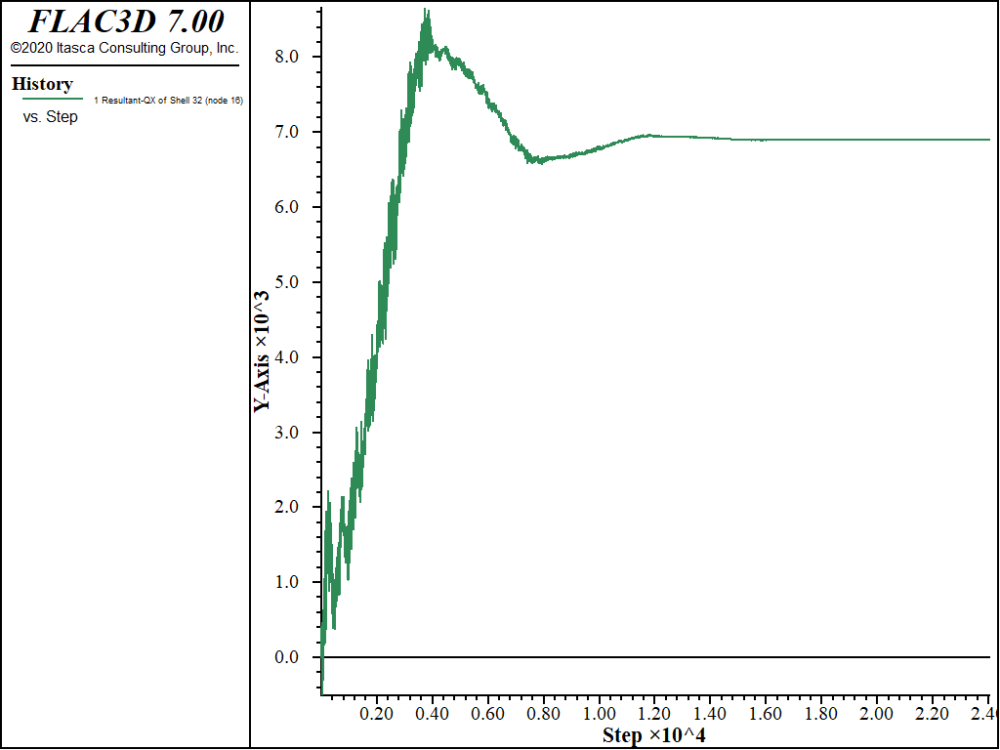

简支梁——两个等值集中荷载——壳单元
问题描述
注意
要在 FLAC3D 中查看该项目，请使用菜单命令 。选择 “Structure/Shell/ConcentratedLoads” 并选中 “ConcentratedLoads.f3prj” 载入。所用 主数据文件（main data files） 示于本例末尾。其余数据文件可在该项目中找到。
简支梁承受两个对称布置的等值集中荷载，如 简支梁——两个等值集中荷载——梁单元（Simple Beam — Two Equal Concentrated Loads — Beam Elements） 所述。这里用壳单元重现该问题，以计算跨中最大挠度以及弯矩与剪力分布，并与解析解比较。
解析解对应梁理论假定；因此必须给壳模型赋予边界条件与性质以重现这些条件。我们为 图 1（Figure 1） 所示梁创建壳模型，使长度等于 9 m、高度 \(d\) 等于 1 m。有两点需考虑：
- 板的刚度比梁大 \(1/(1-\nu^2)\) 倍，因为板材料沿深度（图 1（Figure 1） 中的 \(z\) 方向）抑制了反弹性曲率 \(\kappa_z\) 的发展（Ugural 1981，第 8 页）。因此我们在壳模型中设 \(\nu\) = 0。
- 若表面坐标系的 \(x\) 方向与梁轴线（图 1（Figure 1） 的 \(x\) 方向）对齐，则剪力 \(V\) 等于 \(Q_x d\)（其中 \(Q_x\) 为横向剪应力合力），弯矩 \(M\) 等于 \(M_x d\)（其中 \(M_x\) 为弯曲应力合力）。注意板的平衡方程给出
\[Q_x = {\partial M_x \over \partial x} + {\partial M_{xy} \over \partial y}\]梁理论解假定 \(M_{xy}=0\)。但在我们的板中，两侧比内部略刚，从而沿两侧边产生向内扭转（曲率 \(\kappa_z\)）。可通过约束绕 \(x\) 轴的转动把该效应降到最低，但远离边缘的交叉对角点处节点位移仍略小于沿边缘的节点，从而产生小扭矩 \(M_{xy}\)。我们计算的 \(Q_x\) 在内部是正确的，但对沿边缘的单元不正确。要完全消除 \(M_{xy}\)，唯一办法是施加精确的无扭转梁理论变形场。我们的情形是施加荷载并计算变形场，因此预期沿边缘的 \(Q_x\) 会有轻微误差。


图 1：承受两个等值集中荷载的简支梁（距离单位为米）。
FLAC3D 模型含 144 个壳单元与 88 个节点，如 图 2（Figure 2） 所示。采用交叉对角网格模式以确保响应对称，并采用 DKT 板弯曲（DKT plate bending） 有限单元，因为这是小应变板弯曲问题。若采用任一种壳有限单元也会得到相同结果，因为没有膜荷载。把杨氏模量与泊松比分别设为 200 GPa 与 0。把壳厚度设为 0.133887 m，使二次矩 \(I\) 等于 200 \(\times\) 10-6 m4。边界条件包括梁端简支与两个各 10000 N 的点荷载。点荷载按各节点对应的 分担长度分配到每条荷载线上的四个节点，因此内侧节点承担的荷载是外侧节点的两倍。


图 2：用壳单元模拟简支梁问题的 FLAC3D 模型。
位移场示于 图 3（Figure 3）。最大位移出现在梁中心，等于 6.469 \(\times\) 10-3 m，与 理论值（theoretical value） 完全一致。
小应变模拟中可视化位移场的另一种方法是使用 Shell 绘图项并指定非零变形系数。图 4（Figure 4） 通过向视图添加两个 Shell 绘图项并分别指定变形系数 0 与 100，同时示出未变形与变形后的形状。


图 3：用壳单元模拟简支梁的位移场。


图 4：用壳单元模拟简支梁的变形（放大 100 倍）与未变形形状。
图 5（Figure 5） 与 图 6（Figure 6） 示出剪力与弯矩分布。按该比例尺，它们与理论解一致。这些绘图项在 “Surf X” 属性所指定的表面坐标系中显示这些量，设置使表面 \(x\) 方向对应全局 \(x\) 方向、表面 \(y\) 方向对应全局 \(z\) 方向、表面 \(z\) 方向对应全局负 \(y\) 方向。这些应力合力的符号约定示于 此处（here）。可以看到正 \(M_x\) 对应纤维沿表面正 \(z\) 方向受拉，正 \(Q_x\) 对应作用于正 \(x\) 向表面正 \(z\) 方向的剪力。


图 5：用壳单元模拟的简支梁中剪力分布。


图 6：用壳单元模拟的简支梁中力矩分布。
图 8（Figure 8） 与 图 7（Figure 7） 给出梁左三分之一处剪力与弯矩分布的更细致考察。弯矩分布沿深度为常量，并自支座处的零线性变化到三分点处的 3 \(\times\) 104，与理论解完全一致。剪力分布沿深度不是常量：远离边缘处取值正确，但沿边缘偏离梁理论解。
在距边缘 \(x\) = 1.5 处，\(Q_x\) 与 \(M_x\) 的取值分别为 1.0 \(\times\) 104 与 1.5 x 104，与理论值完全一致。在靠近边缘的 \(x\) = 1.5 处，\(Q_x\) 与 \(M_x\) 的取值分别为 9.25 \(\times\) 103 与 1.5 \(\times\) 104。可见沿边缘剪力值有 7.5% 的误差。该相对梁理论解的偏差源于沿边缘各节点处发展出的非零 \(M_{xy}\)（见 图 8（Figure 8））。


图 7：用壳单元模拟的简支梁左三分之一处的剪力分布。


图 8：用壳单元模拟的简支梁左三分之一处的力矩分布。


图 9：用壳单元模拟的简支梁左三分之一处的扭矩分布。
应力恢复流程在节点处对弯曲与膜合力进行平滑，然后用弯曲合力计算每个壳单元内横向剪切合力的常量值。若在应力连续变化的各面片上对这些值进行平滑，可获得最佳精度。本问题中用 structure shell recover 命令计算应力时，默认对模型中所有壳单元恢复（从而平滑）应力。而 structure shell history resultant-qx 命令只对所指明的特定单元恢复应力，因此不会发生平滑。本问题中我们用以下命令在某个单元中采样 \(Q_x\) 的历史记录
struct shell history resultant-qx surface-x (1,0,0) position (1.625,0,0.5)
该量的图示于 图 10（Figure 10），可以看到该值不等于我们此前由绘图项与 恢复壳单元合力命令（structure shell recover resultants） 命令得到的 1.0 \(\times\) 104。对该问题，必须进行平滑处理才能得到良好的 \(Q_x\) 值。


图 10：某壳单元形心处剪力的演化（未作节点平滑）。
参考文献
Ugural, A. C. Stresses in Plates and Shells. New York: McGraw-Hill Publishing Company Inc. (1981).
数据文件
ConcentratedLoads.dat
model new
model large-strain off
model title "Simple Beam (modeled using shell elements)"
; 创建壳单元并指定材料参数
struct shell create by-quadrilateral (0,0,0) (9,0,0) (9,0,1) (0,0,1) ...
size=(12,3) cross-diagonal element-type=dkt
struct shell property isotropic=(2e11, 0.0) thickness=0.133887
; 边界条件
struct node fix velocity-x velocity-y rotation-x rotation-y ...
range position-x 0.0 ; 左端采用铰支承
struct node fix velocity-y rotation-x rotation-y range position-x 9.0
; 右端采用滚动支承
struct node fix velocity-z rotation-x rotation-y
; 约束非梁变形模态
; 施加的荷载
struct node apply force-edge (0,-1e4,0) range union position-x=3 position-x 6
; 历史
history interval 1
struct shell history resultant-qx surface-x (1,0,0) position (1.625,0,0.5)
; 求解至平衡
model solve ratio-local 1e-6
model save 'ConcentratedLoads'
| 这些内容对您有帮助吗？… 版权与免责声明 |
FLAC3D © 2019, Itasca | 原文更新于 2020 年 10 月 8 日 |